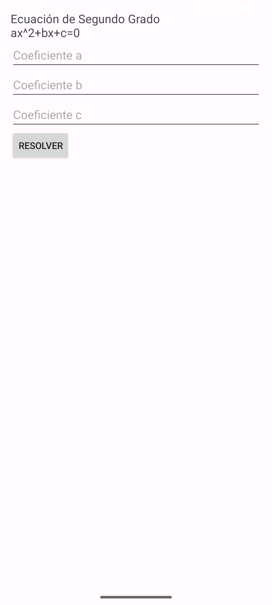
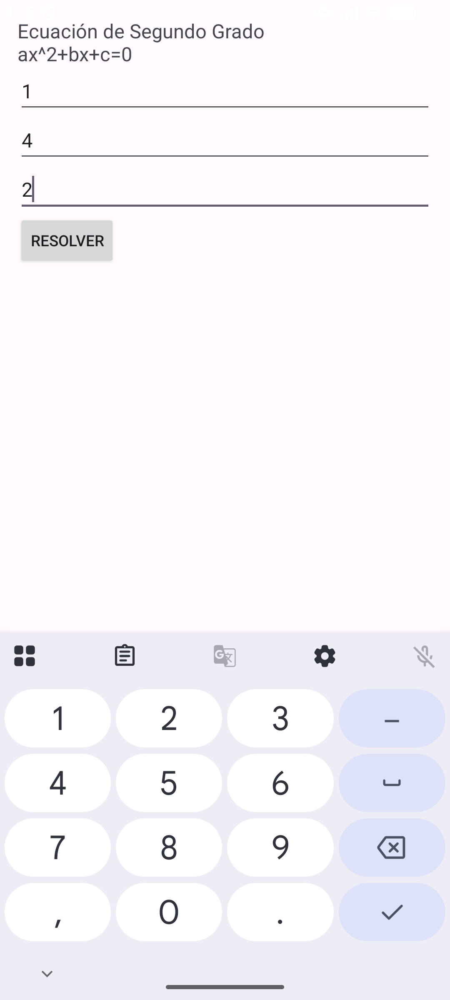
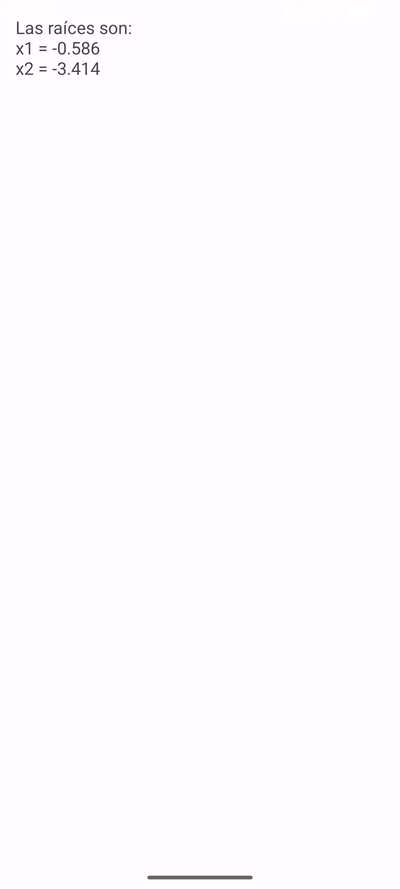
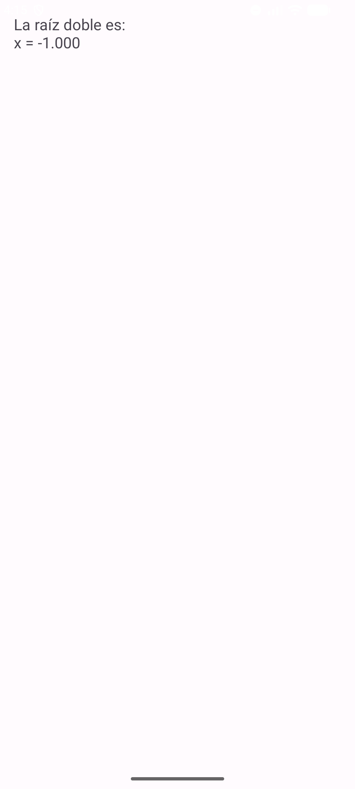
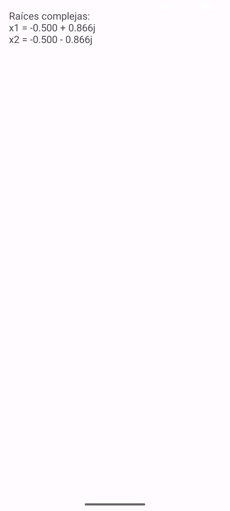

| Asignatura: | Desarrollo de Aplicaciones Móviles Nativas |
| Práctica: | Práctica 7: Intentos en Kotlin |
| Alumno: | Angel Frausto Robles |
| Grupo: | 7CM4 |
| Fecha: | 12 de septiembre de 2026 |
Esta práctica retoma el mismo problema que la Práctica 6, resolver una ecuación de segundo grado
pasando los coeficientes de una pantalla a otra, pero ahora en Kotlin. El material de la materia
presenta tres formas de usar un Intent: el explícito, para moverse entre pantallas de la misma
aplicación; el implícito, para pedirle al sistema una acción general sin decir qué aplicación la
debe atender; y registerForActivityResult, la forma moderna de recibir
de vuelta un resultado de otra actividad en lugar del antiguo
startActivityForResult.
Objetivos:
MainActivity
a ResultActivity con putExtra.
Igual que en las prácticas anteriores de esta materia, ambas actividades extienden
android.app.Activity directamente en vez de
AppCompatActivity, y la interfaz usa
LinearLayout con vistas nativas.
Un Intent explícito nombra la clase de destino, como el que conecta
MainActivity con ResultActivity en esta
práctica. Un Intent implícito, en cambio, solo describe una acción y deja que el sistema decida
qué aplicación la resuelve, por ejemplo Intent(Intent.ACTION_VIEW,
Uri.parse("https://developer.android.com")) para abrir una URL en el navegador que el
usuario tenga configurado. Esta práctica solo necesita el explícito, porque las dos pantallas son
de la propia aplicación.
Al presionar el botón se arma el Intent explícito con los tres coeficientes como datos
adicionales y se navega a ResultActivity:
val intent = Intent(this, ResultActivity::class.java).apply {
putExtra("coefA", a)
putExtra("coefB", b)
putExtra("coefC", c)
}
startActivity(intent)
El documento de la práctica trae un error entre su propio XML y su propio Kotlin. El
activity_main.xml del ejemplo declara los campos como
coefA, coefB y
coefC, pero el MainActivity.kt que se
supone debe leerlos los busca con findViewById(R.id.xa),
R.id.xb y R.id.xc, unos ids que no existen
en ese layout. Copiado tal cual, el proyecto no compila porque R.id.xa
es una referencia que Kotlin no puede resolver. En este proyecto los tres
findViewById usan los ids reales del XML
(coefA, coefB, coefC),
que es, de hecho, lo único que hace falta corregir para que el ejemplo funcione.
El ejercicio pide dos cambios sobre el ejemplo: mostrar las raíces con tres decimales solamente, y
si son complejas, con la notación a + jb. Para los tres decimales se usa el formateador de cadenas
de Kotlin, y para las raíces complejas se separa la parte real de la magnitud de la parte
imaginaria, aplicando valor absoluto a esta última por la misma razón que en la Práctica 6: sin
eso, un coeficiente a negativo puede duplicar el signo en el texto.
val parteReal = -coefB / (2 * coefA)
val parteImaginaria = abs(sqrt(-discriminante) / (2 * coefA))
"Raíces complejas:\nx1 = ${"%.3f".format(parteReal)} + ${"%.3f".format(parteImaginaria)}j" +
"\nx2 = ${"%.3f".format(parteReal)} - ${"%.3f".format(parteImaginaria)}j"
Se probaron los tres casos del discriminante, incluyendo el ejemplo propio del documento de la materia:
| Caso | Entrada | Resultado esperado |
|---|---|---|
| Raíces reales (ejemplo del documento) | a=1, b=4, c=2 | x1 = -0.586, x2 = -3.414 |
| Raíz doble | a=1, b=2, c=1 | x = -1.000 |
| Raíces complejas | a=1, b=1, c=1 | x1 = -0.500 + 0.866j, x2 = -0.500 - 0.866j |





Volver a escribir el mismo ejercicio de la ecuación cuadrática que ya había hecho en Java, ahora en
Kotlin, sirvió más para notar las diferencias de sintaxis que para entender el Intent en sí, que ya
conocía de la práctica anterior: el apply {} para armar el Intent y los
putExtra en una sola expresión, y las plantillas de cadena con
$ en vez de concatenar con signos de más. Lo que sí fue nuevo fue
encontrarme un error real en el propio documento de la práctica, entre el layout y el código de
ejemplo; corregirlo fue un buen ejercicio para no copiar el código de un PDF sin revisar que
encaje con el resto del proyecto. Sobre registerForActivityResult, que
el documento explica antes del ejemplo, no lo usé en esta práctica porque
ResultActivity solo muestra un resultado y nunca necesita devolver
nada a MainActivity; lo dejo entendido para cuando haga falta.
https://developer.android.com/guide/components/intents-filtershttps://developer.android.com/training/basics/intents/result